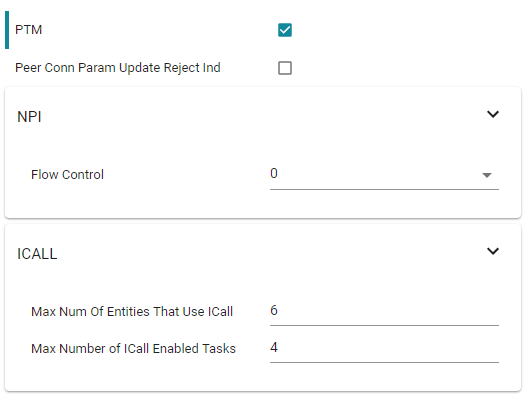

Production and Direct Test Mode (PTM, DTM)¶
This page will describe Production Test Mode (PTM) which allows a CC13xx or CC26xx BLE application in a “single-chip” configuration to temporarily expose the host control interface (HCI) test commands over the serial interface when triggered externally to do so (e.g. holding a GPIO pin low during power up). This test mode allows the device to be connected to a Bluetooth RF Tester in order to run Direct Test Mode (DTM) commands on a production line using the final release firmware, while leaving the UART GPIO pins available for the application to use at all other times. Note that this page only considers UART, and not SPI, as the transport protocol since it uses the least amount of GPIO’s and throughput is not a factor for DTM.
Note
Note: DTM defines two interface methods for controlling the LE PHY: HCI and 2-wire UART. The TI Bluetooth Low Energy protocol stack only supports the HCI method for DTM and PTM.
Direct Test Mode (DTM)¶
DTM is a standard method for testing BLE devices using the DTM HCI commands. A number of wireless test equipment manufactures, including Anritsu (MT8852B), Keysight and Rhode and Schwarz, make BLE Testers that use this mode. It is very useful to use these testers during development or on the production line in order to verify the RF performance of a BLE system. Complementary to these testers, it is also possible to create your own PC application that sends these DTM commands over the serial link. DTM is very well described in the Bluetooth Core Specifications Version 5.3 Volume 6 Part F. All DTM commands as well as TI Vendor Specific modem test commands are accessible in embedded (single-device) application via API calls as well as over HCI in the Host_Test sample application. Refer to the TI Vendor Specific HCI Guide in the documents folder of the SimpleLink CC13xx/CC26xx SDK.
Production Test Mode (PTM)¶
One problem with DTM is that it relies on a certain stack configuration
(network processor with HCI exposed over UART) in order to work with the
testers, though many end-applications don’t use this configuration.
This would require the customer, during production, to flash the wireless
MCU with a network processor image (e.g., host_test) before testing, and
then re-flash with the final product image. To circumvent this, the TI
BLE-Stack has implemented a feature called Production Test Mode (PTM), which
allows for an embedded software application to support direct test mode without
exposing the HCI to the UART pins under normal operation.
Note that the pins used for PTM can also be used for an application UART
interface. In this case, it is necessary to ensure that the other device that
is connected to the UART interface does not run at the same time that DTM is
being exercised. If the device powers up and goes into PTM mode (by a GPIO
being held high or low or some other stimulus), the UART will then be used for
DTM commands. If the device powers up normally and does not go into PTM mode,
then the UART can be initialized by the application and used to communicate
with the other device.
DTM commands can also be called by the embedded BLE application.
To add PTM to the simple_peripheral project follow the steps below:
Open the SysConfig file (double-click on the simple_peripheral.sysconfig file)
Open the BLE tab and enter Advanced Settings
Check the PTM box
This is the only configuration required to enable PTM as checking the PTM box automatically increases the Max Number of ICall Enabled tasks to 4. If you want to enable the NPI packet flow control, this can be done in the NPI panel. The default settings when enabling PTM is shown in the figure below.
Figure 110. Default settings when enabling PTM.¶
Tip
When adding PTM mode to the application, it is recommended to change the
NPI task to use Task_create(...) as opposed to construct. In this way,
the RAM needed by the NPI runtime task stack is consuming RAM that is
not used in the application’s default behavior.
In order to determine if a command is accessible via PTM mode, users should
refer to the translation tables created in icall_hci_tl.c under the define
PTM_MODE.